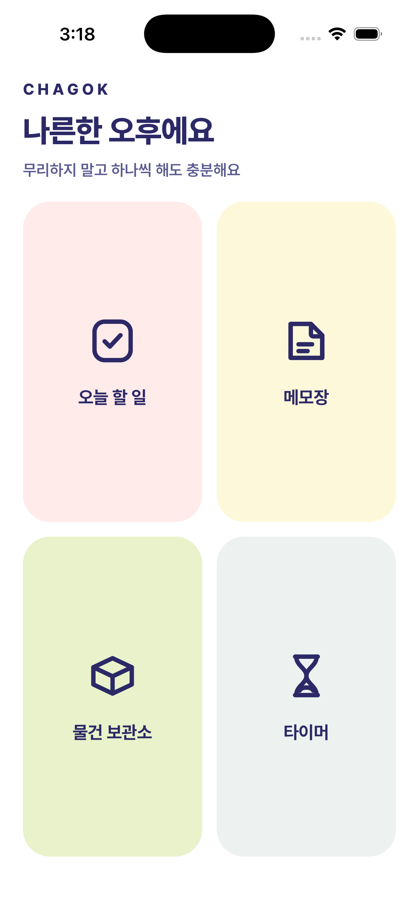
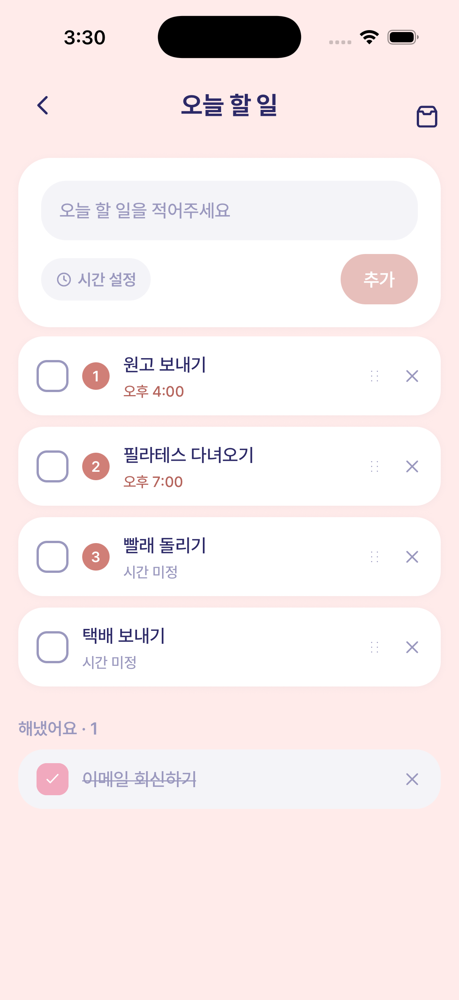
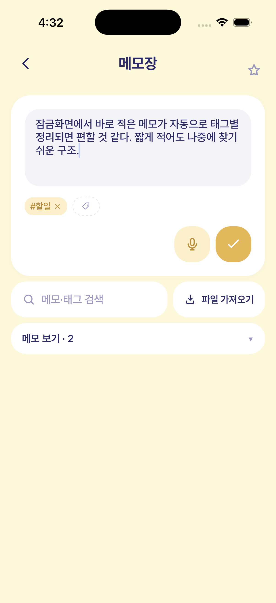
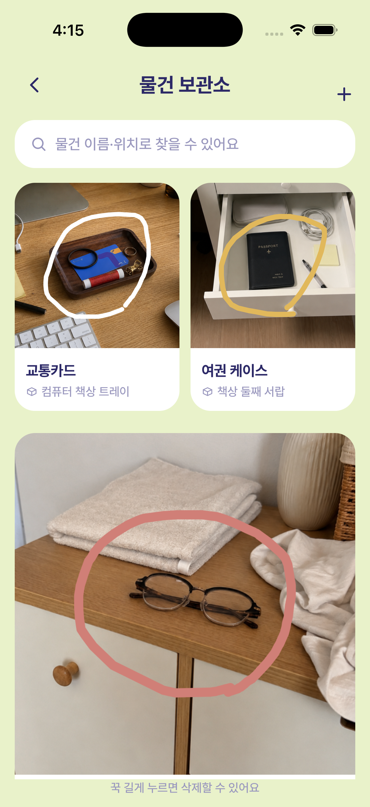
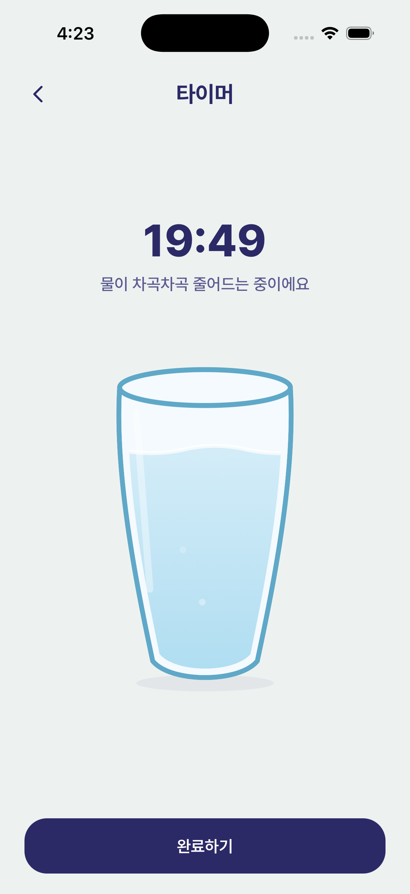

할 일, 메모, 물건 위치, 타이머까지
자주 잊는 것들을 한곳에 모아두세요

복잡한 계획은 잠시 미뤄두고 오늘 할 일부터.
끝낸 일들은 차곡차곡 모여 작은 성취가 돼요.

아이디어, 사고 싶은 것, 링크까지.
아무렇게나 적어도 태그별로 알아서 정리해 줘요.

자주 잃어버리는 물건은 둔 자리를 사진으로.
"어디 뒀더라" 하는 순간을 줄여줘요.

일을 마칠 시간을 정하면 물이 차곡차곡 줄어들어요.
숫자보다 직관적으로 남은 시간을 느낄 수 있어요.
